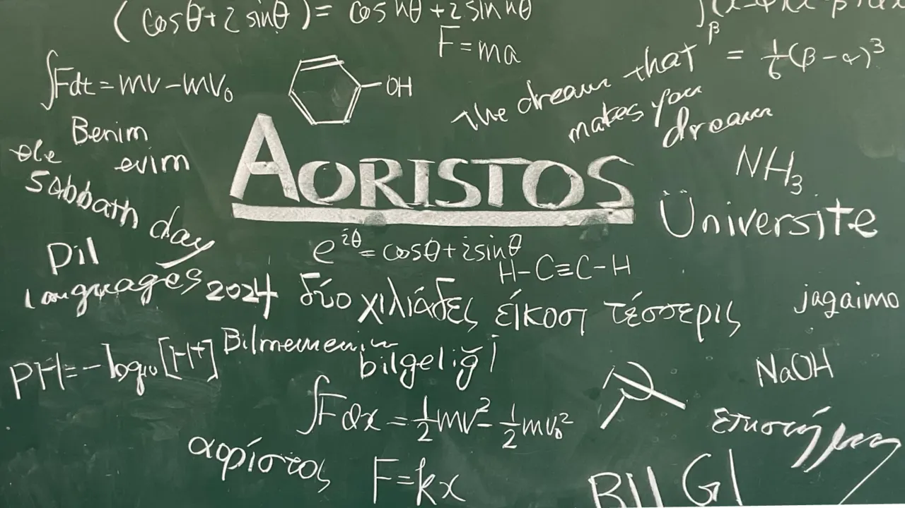

What is “SF”?
本気の文化祭。
スクールフェア、略して SF は大阪星光学院の文化祭です。定番の射的や食品販売から、木材を使った大型企画、 有名ミュージカルを再現した演劇まで。企画によっては1月から準備を始めるものもあり、星光生がいちばん熱くなる行事のひとつです。
SF のこと、星光のこと。
What is “SF”?
スクールフェア、略して SF は大阪星光学院の文化祭です。定番の射的や食品販売から、木材を使った大型企画、 有名ミュージカルを再現した演劇まで。企画によっては1月から準備を始めるものもあり、星光生がいちばん熱くなる行事のひとつです。
What is “Seiko”?
大阪星光学院は「世の光であれ」を校訓に、約1000人が学ぶ中高一貫の男子校です。南部合宿や黒姫山荘合宿で寝食を共にするため、 生徒どうしの絆は卒業後も続きます。先生との距離も近く、行事には生徒も先生も全力で取り組みます。
企画の混雑状況や時間の変更、販売情報をお届けします。

About
このページは、Aoristos が大阪星光学院 SF 2026 に出展する企画をご案内するために制作・運用しています。
AorXC、部誌の販売、「科学の甲子園」展示、これまでの実績展示などを行います。高校棟3階 特別第3教室(SF企画の部屋)でお待ちしています。
※ 学校および SF の公式サイトではありません。SF 全体のお知らせは SF 公式サイト をご確認ください。